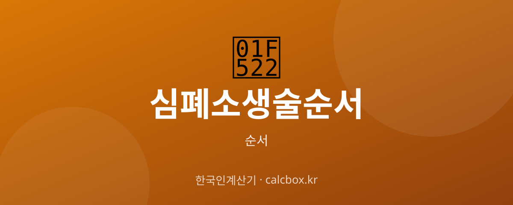

심폐소생술 순서 — 일반인 CPR 단계별 방법 (가슴압박·AED)
갑작스러운 심정지에서 골든타임을 지키는 심폐소생술(CPR). 일반인이 당황하지 않도록 반응 확인부터 자동심장충격기(AED) 사용까지 순서를 정리했습니다.

심폐소생술(CPR) 순서 한눈에
심폐소생술은 심장이 멈춘 사람의 혈액순환을 인위적으로 유지해 뇌 손상을 막고 생존 가능성을 높이는 응급처치입니다. 심정지 후 4~5분이 지나면 뇌 손상이 시작되므로, 구급대가 오기 전 즉시 시행하는 것이 중요합니다.
일반인은 인공호흡이 어렵거나 자신이 없으면 가슴압박만 계속하는 '가슴압박 소생술'도 효과가 있습니다.
심폐소생술(CPR) 순서 정리
- 1단계 · 반응 확인 — 환자의 양쪽 어깨를 가볍게 두드리며 '괜찮으세요?'라고 물어 의식과 반응이 있는지 확인합니다.
- 2단계 · 119 신고 및 도움 요청 — 반응이 없으면 주변 사람을 특정해 '거기 계신 분, 119에 신고해 주세요, 그리고 자동심장충격기(AED)를 가져다주세요'라고 명확히 요청합니다.
- 3단계 · 호흡 확인 — 환자의 가슴이 오르내리는지 10초 이내로 관찰합니다. 호흡이 없거나 비정상적(헐떡임)이면 심정지로 판단합니다.
- 4단계 · 가슴압박 30회 — 가슴 정중앙(복장뼈 아래쪽 절반)에 손꿈치를 대고 팔을 곧게 편 채 약 5cm 깊이로 분당 100~120회 속도로 30회 압박합니다.
- 5단계 · 인공호흡 2회 — 머리를 젖히고 턱을 들어 기도를 연 뒤, 코를 막고 환자의 입에 1초씩 2회 숨을 불어넣어 가슴이 부풀도록 합니다.(자신 없으면 생략하고 압박만 지속)
- 6단계 · 30:2 반복 — 가슴압박 30회와 인공호흡 2회를 119 구급대가 도착하거나 환자가 회복될 때까지 반복합니다.
- 7단계 · AED 사용 — 자동심장충격기가 도착하면 전원을 켜고 음성 안내에 따라 패드를 부착한 뒤, 심장충격이 필요하면 모두 물러나게 하고 버튼을 누릅니다.
쉽게 외우는 법
핵심 순서는 '확인 → 신고 → 압박 → 호흡' 네 단어로 기억하세요.
가슴압박 속도는 동요 '아기 상어'나 'Stayin' Alive' 박자(분당 100~120회)에 맞추면 적당합니다.
참고사항
가슴압박은 '세게, 빠르게, 끊김 없이'가 원칙입니다. 압박 후에는 가슴이 완전히 원위치로 올라오게(이완) 해야 합니다. 소아·영아는 압박 깊이와 방법이 다르니 별도 교육을 받는 것이 좋습니다. 본 내용은 일반적 안내이며 정식 교육(대한심폐소생협회 등) 이수를 권장합니다.
자주 묻는 질문 (FAQ)
Q. 인공호흡을 못 하겠으면 어떻게 하나요?
인공호흡에 자신이 없거나 위생이 우려되면 인공호흡을 생략하고 가슴압박만 끊김 없이 계속하는 '가슴압박 소생술'을 해도 됩니다. 아무것도 하지 않는 것보다 훨씬 효과적입니다.
Q. 가슴압박은 얼마나 세게, 빠르게 하나요?
성인 기준 약 5cm 깊이로, 분당 100~120회 속도가 권장됩니다. 팔을 곧게 펴고 체중을 실어 압박하며, 매 압박 후 가슴이 완전히 올라오도록 힘을 뺍니다.
Q. AED가 없으면 어떻게 하나요?
AED가 도착할 때까지 가슴압박과 인공호흡(30:2)을 멈추지 말고 계속하면 됩니다. AED는 있으면 생존율을 크게 높이지만, 없어도 가슴압박을 지속하는 것이 가장 중요합니다.